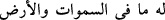

ile müstağrak olmalı, O’ndan başkasının muhabbetini kalpten çıkararak o hâle
gelmelidir ki O’ndan başkasını arzulamasın, O’ndan gayriden korkmasın. Çünkü O’ndan
başka her şey boştur. Rasûlullah (s.a.) Efendimiz: “Arab’ın söylediği sözlerin en
doğrusu Lebîd’in sözüdür ki şöyle demiştir: “Biliniz ki Allah’dan başka her şey
boştur.”[212]
Bu yüce ism-i ilâhî’de, başka isimlerde olmayan husûsiyetler pek çoktur. Bunlar
saymakla bitmez. Bunlardan biri şudur: Diğer ilâhî isimlerden bir harf düşer; yâhud
çıkarılırsa hemen mânâsı bozulur, alâkasız, hattâ kötü mânâlı bir kelime olur. Fakat bu
ism-i celîl bundan uzaktır. Şöyle ki:
Başındaki elif hafzolunsa “lillâh” ( ) kalır. Nitekim:
(
) gibi âyet-i celîleler’de olduğu gibi. Birinci “lâm” hazfolunsa
( ) olur. (
) âyetinde olduğu gibi. İkinci “Lâm” da hazfolunsa
Allah lâfzının yerini tutan (__WORD__) zamiri kalır, (
) gibi âyet-i celîleler’de
olduğu gibi. Hülâsa olarak hangi şekilde kalırsa kalsın muhakkak O’na açıklıkla delâlet
eden bir mânâ ifâde eder.
Hz. Şeyh Üftâde der ki: Alâuddîn Halvetî, Bursa’ya gelince vaaz etmek üzere Ulu
Câmi kürsüsüne çıktı. Konuşmasını bekleyen kalabalık bir cemâat vardı. Söze başlayıp
sadece bir kez “Ya Allah” dedi. Cemaatta öyle bir hâlet-i rûhiye hâsıl oldu ki hepsi
raksedip dönmeye başladılar. Neredeyse cemaat korku ve ağlamaktan normal hallerine
dönemeyeceklerdi.
Hikâye olunmuştur ki: Zamanın padişahı ölünce bir grup adam toplanıp vezîri
öldürmek istediler. Vezîr, bunların elinden kurtulmak için İstanbul’da bulunan Şeyh Vefâ
hazretlerinin evine sığınıp yardım talebinde bulundu. Şeyh onu evine aldı. Vezîri
kovalayan adamlar topluca Vefâ hazretlerinin evine saldırdılar. Şeyh Vefâ dışarı çıkıp
bir kez “Yâ Allah” deyince hepsi dağılıp kaçtılar.
İşte bu tür kimselerin Allah adını andıkları zaman son derece müessir sonuçlar ortaya
çıktığı görülmektedir. Aynı ismi bizler de zikrettiğimiz halde böyle bir tesîr hâsıl
olmamaktadır. Çünkü onlar nefislerini tezkiye edip güzel huylarla bezemişlerdir. Bizde
ise böyle bir durum olmadığı gibi buna kabiliyetimiz de yoktur. Ancak feyiz Allah Teâlâ
hazretlerindendir. Hâfız der ki:
Hz. Cebrâîl feyziyle yardıma yetişirse
Diğer insanlar da İsâ gibi ölüleri diriltirler.
“Ondan başka ilâh yok.” İbâdet edilmeye lâyık olan başkası değil, sadece O’dur.
Anlatıldığına göre Kutbu’l-aktâb’ın tesbîhi “Yâ hû, yâ men hû hû, ve yâ men lâ ilâhe
illâ hû” idi. Bunu, hâl tarîkıyla söylerse bazı tasarruflara muktedir olur.
Tevhîdin üç mertebesi vardır: Birincisi, mübtedîlerin tevhîdi. Bu “Lâ ilâhe illallah,”